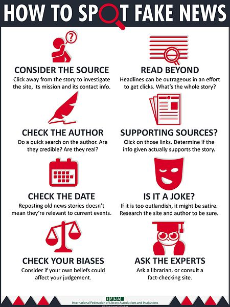

Learn | The Fake News Identifier App
BACK
Take a look at the
infographic
below to help you identify
the ways that
fake news
can be spotted.

Here are some other resources to help you better understand
how to determine whether or not something is fake news:
How to Spot Fake News
How to Know Which Sources to Trust
↓ Check Out This Video!
Watch this quick and fun Video for a summary!
We've got your back!
Thank you for using the
Fake News Identifer App
!